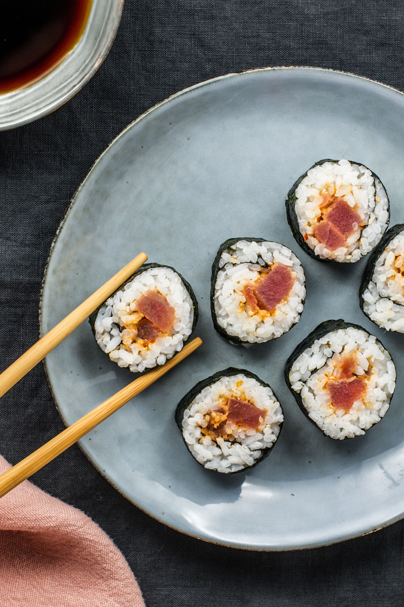
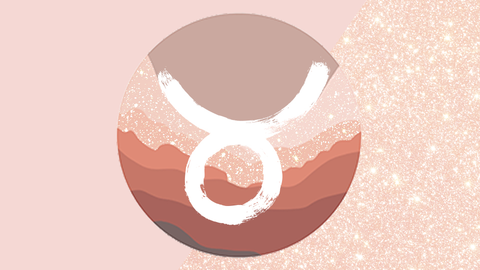
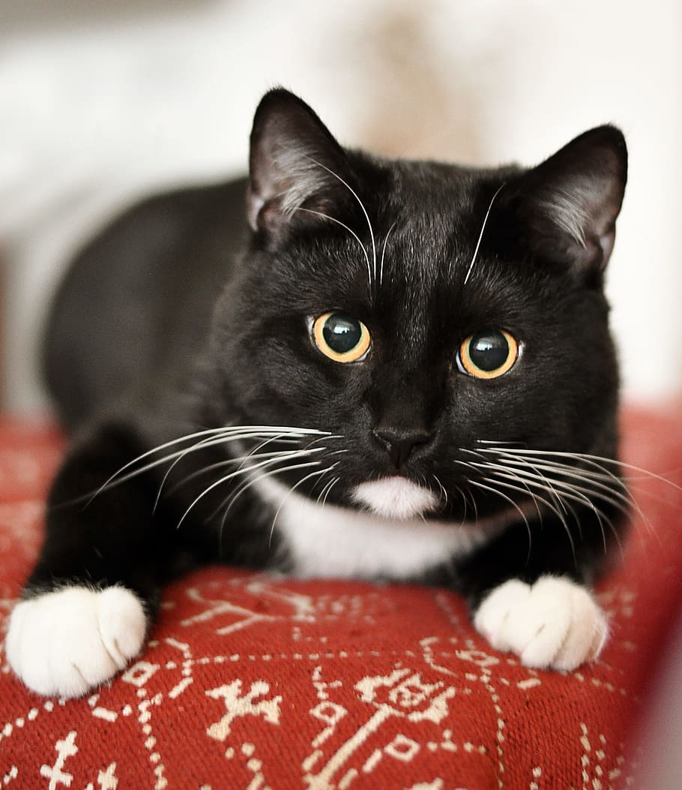
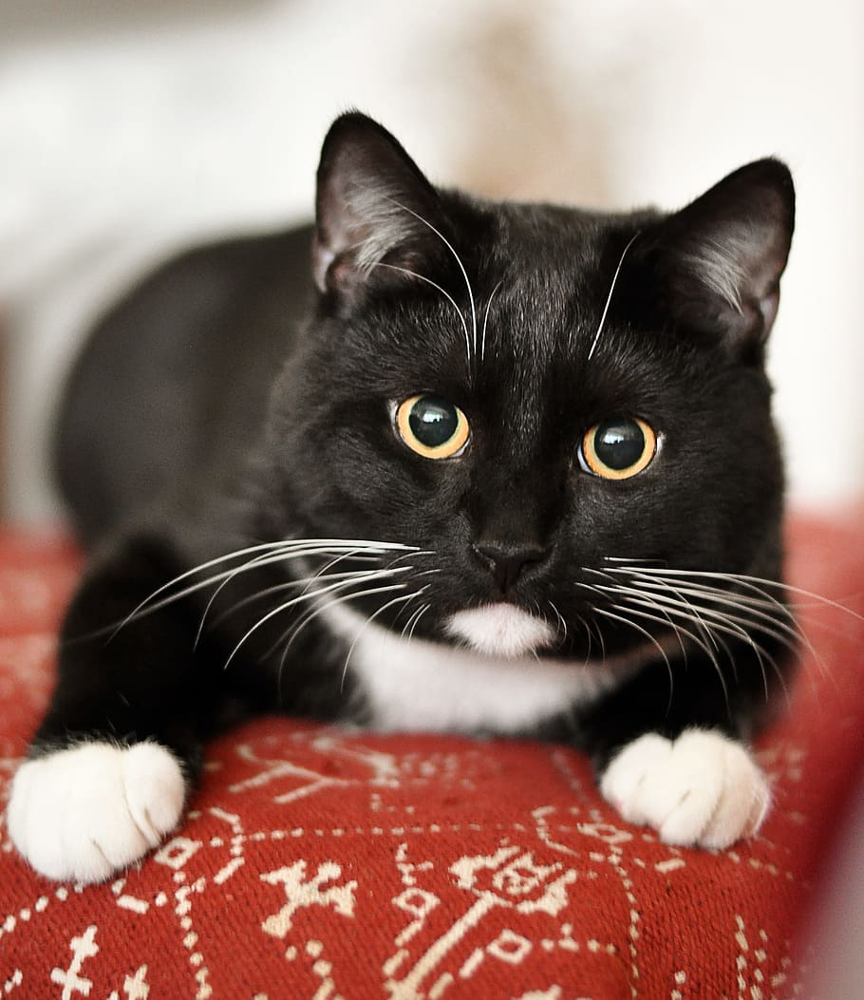

Ava Florczak
Fun Facts:
- Ava's birthday is April 24, 2001, which makes her a Taurus.
- The best place she's ever traveled to is Paris, France and her next dream destination is the Maldives.
- Her hometown is Tenafly, New Jersey and she doesn't plan on moving back anytime soon.
- She is majoring in marketing and graphic design because she likes art and being creative. It doesn't feel like work to her.
- Currently her dream job is to work at a design agency, but as a kid, she wanted to be a pediatric nurse.
- Ava has one black and white cat named Camille.
- Her favorite color is pink because it's fun and is associated with positive things.
- In her free time, Ava loves going out with her friends and exploring around campus.
- Ava's biggest fear is getting in a car crash.
- Her favorite food is sushi, particularly spicy tuna. She's a decent cook but sometimes too lazy to make interesting meals.


 
